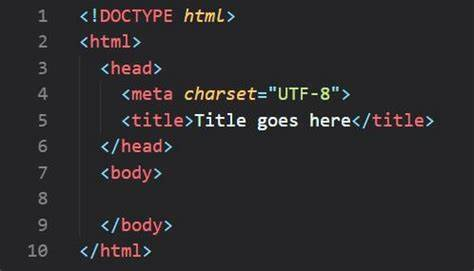

Les techniques de l’information et de la communication regroupent l'ensemble des outils mis en place pour manipuler, traiter produire, faire circuler , transmettre, modifier et échanger et permettre une meilleure diffusion de l'information et permettent aux utilisateurs de :

Sous form de:


La communication est l'action de communiquer, d'établir une relation avec autrui, de transmettre quelque chose à quelqu'un.
Les objectifs de communication correspondent aux réactions attendues du récepteur. Les objectifs doivent être définis selon trois dimensions : cognitive, affective et comportementale.


Réseau (informatique) Network : ensemble d'ordinateurs et terminaux autonomes (libres) connectés entre eux pour échanger des informations numériques selon des règles bien définies. Deux ordinateurs connectés constituent déjà un réseau.
A réseau est un ensemble d'équipements interconnectés pour communiquer données entre applications.
Les réseaux informatiques sont destinées à communiquer des terminaux distants avec un site central et des ordinateurs entre eux, mais aujourd'hui on se dirige vers des réseaux qui intègrent également les données, la parole et la vidéo.
Un réseau s’appuie sur deux notions fondamentales :
Les réseaux peuvent être classifiés en fonction de différents critères :
Ou selon des services qu’ils offrent. Ainsi, pour les réseaux utilisant la famille des protocoles TCP/IP, on distingue :
Sont installés à l'intérieur de l'ordinat
utiliser pour
utiliser pour
C'est un modele de reference pour les communication de donner les application peuvent communiquer sur un réseau informatique, il est divisé les 7 couches suivant et chaq in a sa propre fangtian:
Remarque: le Modèle OSI est théorique c’est just pour la compréhension des principe fondamentaux de la communication réseau
TCP: transmission control protocol IP: internet protocol
Un modèle de référence pour le communication de réseau qui est utilisé pour la conception et la mise en oeuvre des réseau informatique, il est basé sure couche seulement qui sont:
Remarque: le modèle TCP/IP est utilisé pour les protocols de communication les plus couramment utilisé IP TCP et UDP, et plus utilise la conception des réseau d’entreprise, internet et non fil.
La communication dans un réseaux est base on 3 regle
Est le numéro qui identifie chaque ordinateur dans les réseaU QU’IL APPARTIENT, il existe 2 mode d’adressage:
Le World Wide Web (Web) est un système hypertexte public sur Internet qui permet d'accéder à des pages web via des sites.
Le Web est une application de l'Internet inventée par Tim Berners-Lee et Robert Cailliau.
Internet est un support de communication plus large, tandis que le Web est une partie des contenus circulant sur l'Internet. Le Web fonctionne en accédant à des documents textuels situés sur des machines accessibles via Internet et interconnectés par des liens hypertexte.
Les trois mécanismes de base du Web sont :
Une page web est un document multimédia pouvant contenir des images, du texte,
des éléments interactifs et des liens
. Elle est décrite élément par élément à l'aide d'un langage descriptif tel que HTML (1992), XHTML (2002) ou HTML5.
Une page web est stockée dans un fichier HTML et est interprétée et affichée par un navigateur web. Elle est localisée sur Internet à l'aide d'une URL et permet d'accéder à d'autres pages via des liens hypertexte.
Un site web est un regroupement de pages web organisées autour d'une thématique commune.
Les pages sont interconnectées par des liens hypertexte et sont créées par la même entité (organisation, entreprise, individu).
Les sites web sont généralement hébergés sur le même serveur et structurés sous forme d'une hiérarchie de dossiers et de fichiers, similaire à un disque local. Les sites web permettent également l'utilisation de chemins relatifs pour les réfé
HTML (HyperText Markup Language) is a language for describing web pages. An HTML document is a structured text file built using a specific syntax and organized with tags. It is interpreted and displayed in a web browser such as Mozilla Firefox, Internet Explorer, or Safari. HTML documents can be created using specialized web page editors like Dreamweaver or simple text editors like Notepad or WordPad.
The basic principles of HTML include the use of tags. At a minimum, an HTML file should contain the following four tags:

chapitre 5
C quoi Git ?
Git est un logiciel de versioning créé par Linus Torvalds, qui permet de conserver un historique des modifications
effectués sur un projet et de revenir à une ancienne version en cas de problème.
A quoi sert concrètement un système de gestion de version ?
A chaque fois que vous voulez modifier quelque chose sur le site ou tester une fonctionnalité, vous êtes obligé
d'effectuer une sauvegarde du site avant l'implémentation afin de pouvoir le restaurer si quelque chose se passe mal.
Imaginez maintenant que vous soyez 10 à travailler sur le même site web, en vous occupant chacun de développer
des fonctionnalités différentes mais qui peuvent être liées entre elles.
Ici, l'idée la plus logique serait de mettre en place un serveur distant qui contiendrait l'historique des
modifications faites par chaque développeur afin que chacun ait accès aux avancées des autres.
Le modèle centralisé vs le modèle décentralisé
Git est un logiciel de gestion de version qui permet d'enregistrer les modifications effectuées sur un projet et de
revenir à une version précédente du projet. GitHub est un service en ligne qui permet d'héberger des dépôts ou repo
Git, qui sont publics et contribuent à leur développement. GitHub est le plus grand hébergeur de dépôts Git du monde.
C quoi GitHub?
Git est un logiciel de gestion de version qui permet d'enregistrer les modifications effectuées sur un projet et
de revenir à une version précédente du projet. GitHub est un service en ligne qui permet d'héberger des dépôts
ou repo Git, qui sont publics et contribuent à leur développement. GitHub est le plus grand hébergeur de
dépôts Git du monde.
Utiliser Git
On utilise la console et un langage en lignes de commande pour installer et utiliser Git. La ligne de commande est
le seul moyen d'avoir accès à toutes les commandes Git, et tous les personnes vont avoir accès aux mêmes
commandes avec la ligne de commande. En Windows,
Pour ouvrir la ligne de commande, raccourcie : Windows + alt. + cmd et rechercher cmd.
Vous pouvez télécharger Git sur le site officielle de GitHub
La gestion des informations selon Git
Git considère les données comme un flux d'instantanés ou "snapshots" et dispose de l'historique complet dun projet
localement, rendant les opérations de Git plus rapides et plus agréables.
Les états des fichiers
Git est un outil utilisé pour suivre les modifications sur les fichiers d"un projet. Un fichier peut avoir deux
grands états : sous suivi de version ou non suivi. Lorsqu"on démarre un dépôt Git à partir d"un répertoire déjà
existant, les fichiers sont toujours non suivis. Lorsqu'on ajoute de nouveaux fichiers ou modifier des fichiers
existants, les fichiers sont considérés comme "modifiés" par Git tandis que les nouveaux fichiers vont être
"non suivis". Lorsqu'on demande à Git de prendre l'instantané, les fichiers faisant partie de l'instantané sont
à nouveau considérés comme "validés" et le cycle peut recommencer.
Les zones de travaille
Les états de fichiers sont liés à des zones de travail dans Git. Tout projet Git est composé de trois sections :
le répertoire de travail (working tree), la zone d'index (staging area) et le répertoire Git (repository).
Le répertoire de travail correspond à une extraction unique (“checkout”) d'une version du projet. Les fichiers sont
extraits de la base de données compressée située dans le répertoire Git et sont placés sur le disque afin qu'on
puisse les utiliser ou les modifier. La zone d'index correspond à un simple fichier, généralement situé dans
le répertoire Git, qui stocke les informations concernant ce qui fera partie du prochain instantané ou du prochain
“commit”.
Le répertoire Git est l'endroit où Git stocke les métadonnées et la base de données des objets de votre projet.
Pour tenir ces informations, vous pouvez aider des schémas ci-dessous.
Créer un dépôt Git à partir d'un répertoire existant
Lorsqu'on démarre avec Git, on a souvent déjà des projets en cours stockés localement sur notre machine ou sur
serveur distant et pour lesquels on aimerait implémenter un système de gestion de version.
Pour initialiser un dépôt Git, on utilise ensuite la commande git init comme ci-dessous. Cela crée un sous
répertoire. Git qui contient un ensemble de fichiers qui vont permettre à un dépôt Git de fonctionner.
La commande git add permet en fait de faire plusieurs choses : elle permet d'indexer des fichiers déjà sous suivi
de version et de placer sous suivi des fichiers non suivi (en plus de les indexer).
Pour valider ces fichiers et les ajouter en base, on va maintenant utiliser la commande git commit.
Ajouter ou modifier des fichiers dans Git
This document explains how to add or modify files in a project and update our Git repository. To do this, we must
use the commands git add and git commit. It is important to note that the commit status of a file depends on
the state it was in when the command was executed. If we want to keep the latest version of a file, we must still
run the command before executing the commit. Additionally, git commit can be used with the option -a. This will
allow us to easily track any changes made to the files.
C quoi une branche ?
Une branche est un pointeur vers un commit en Git, qui est créée par la modification de la base pour développer
et tester de nouveaux fonctionnalités. Le pointeur est un objet qui contient le nom et prénom de l'auteur du commit,
le message renseigné lors de la création du commit, et des pointeurs vers l'instantané du contenu indexé et
des pointeurs vers le ou les commit précédant directement. La branche par défaut est maître et va se déplacer
automatiquement à chaque nouveau commit pour pointer sur le dernier commit effectué. Une nouvelle branche dans Git
crée uniquement un pointeur plutôt qu’une copie du répertoire de travail.